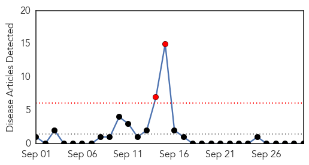
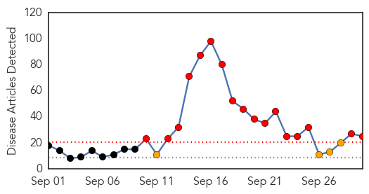
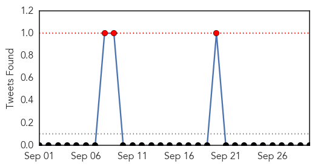
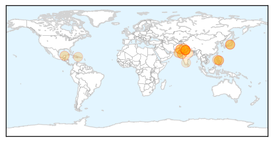
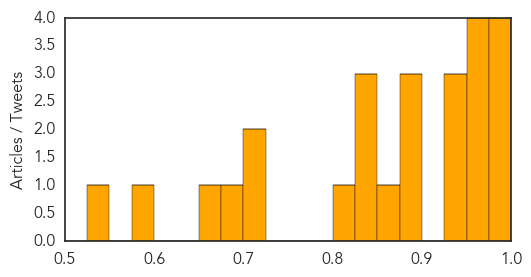

Bubonic Plague
30-Day Web Trend
2 alerts, 0 warnings

30-Day Twitter Trend
0 alerts, 0 warnings

Article Locations

Article Confidences

Top Articles:
-
No articles found for Sep 30, 2015
Top Tweets:
-
No tweets found for Sep 30, 2015
Dengue Fever
30-Day Web Trend
17 alerts, 4 warnings

30-Day Twitter Trend
0 alerts, 0 warnings

Article Locations
Article Confidences
Top Articles:
- 0.992
- Govt confirms 3 dengue deaths
- 0.991
- Eight dengue cases confirmed in Sindh's Umerkot
- 0.987
- Tainan Enterprises : CDC: post-typhoon raises risk of dengue fever spread
- 0.984
- Dengue changes tack, hits the brain in Gujarat
- 0.963
- Dengue claims 5 more lives in Delhi
- 0.959
- Bulacan declares state of calamity due to dengue
- 0.959
- Dengue Deaths Very Minimal in Northeast Northeast Today
- 0.952
- Pakistan: Eight dengue cases confirmed in Sindh's Umerkot
- 0.947
- Tripura reeling under Dengue, encephalitis
- 0.942
- Delhi health department holds meeting
- 0.934
- Effect of dengue minimal in North East
- 0.881
- Most of Q.R.’s recorded dengue cases are from visitors
- 0.880
- Fever not so rampant in Vijayawada
- 0.876
- Delhi’s burden
- 0.869
- Bulacan declares state of calamity over dengue cases
- 0.848
- Boost anti-dengue drive, mayors told
- 0.836
- Censoring an epidemic
- 0.825
- Token presence
- 0.810
- Chief secretary to supervise drive against dengue
- 0.714
- PRC to public: Donate blood for dengue victims
- 0.711
- Kin protest as boy dies during treatment
- 0.685
- The Month In Plagues: Dengue In India, Ancient Plague Fleas, And More
- 0.669
- Unregulated sector
- 0.576
- Aedes bites Ahmedabad collegians hard
- 0.530
- For private plunder
Top Tweets:
- 0.511
- Flavivirus news: 3979 cases of suspected dengue reported in Sept: BMC - The Indian Express: The... http://t.co/k3xnq79HP6 pathogenposse